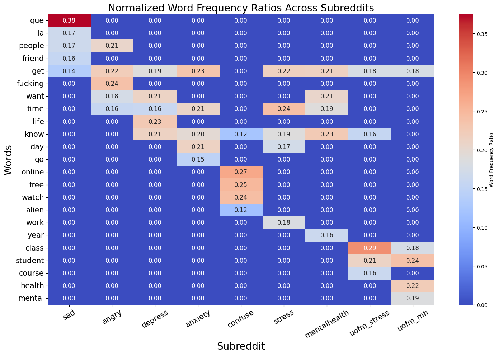
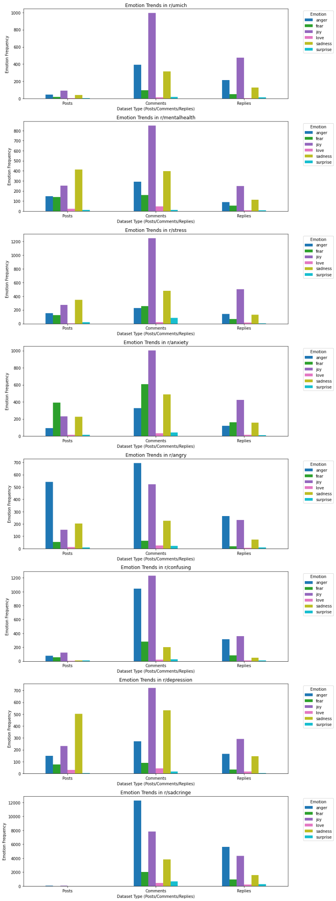

Abstract
This study explores emotional expression and engagement dynamics within Reddit communities, focusing on how users convey negative emotions and how these evolve across posts, comments, and replies. Using various natural language processing techniques like word analysis, sentiment analysis, and emotion detection, we analyze data from eight different subreddits, including mental health-focused communities (e.g., r/stress, r/mentalhealth) and broader contexts (e.g., r/umich). Results show a consistent pattern of emotional transformation, where posts often expressed sadness or anger, while comments and replies shifted toward positivity, with joy dominating in most subreddits. Subreddits like r/stress and r/umich displayed strong supportive engagement, emphasizing solution-oriented interactions. In contrast, subreddits like r/angry and r/sadcringe maintained higher levels of anger, reflecting the thematic focus of these communities. Our methods, including fine-tuned SBERT-based models, TextBlob for sentiment analysis, and a Hugging Face model for emotion detection, captured nuanced emotional shifts among these posts, comments, and replies. These findings provide insights into the transformative role of community responses in fostering positivity. This work contributes to understanding online mental health discourse and informs strategies for designing supportive and empathetic digital spaces.
1. Introduction
Online platforms like Reddit have become significant spaces for individuals to discuss mental health and share everyday stresses. These anonymous forums provide users with opportunities to seek support, share experiences, and connect with others facing similar challenges. Subreddits, which are dedicated communities within Reddit, cater to specific audiences and interests, ranging from general mental health discussions to stress management and academic concerns.
Understanding how users express emotions and sentiments within these online spaces is crucial for identifying community-specific needs and tailoring mental health interventions. Insights gained from analyzing these discussions can inform strategies to foster supportive and empathetic environments, both online and offline. In this report, we explore the linguistic and emotional dimensions of posts, comments, and replies across several mental health-related subreddits.
Our analysis has two primary research questions:
RQ1: How do users across subreddits vary in expressing emotions and themes, and what insights can keyword and sentiment analysis reveal about community-specific dynamics?
RQ2: How does participating in subreddit discussions focused on negative emotions influence users' sentiment, emotional tone, and engagement patterns over time?
By examining these questions, we aim to find out the unique ways these communities share emotional expressions and offer support. Gaining insights from related studies, we leverage advanced text analysis methods to uncover trends and patterns in user behavior. Our methodology integrates word frequency analysis, sentiment scoring, emotion detection using pre-trained models, a fine-tuned model for comment classification, and temporal online activity tracking. These tools enable us to capture the nuances of user interactions and compare emotional tones across different content types and subreddits.
2. Related Work
In this section, we begin by reviewing existing research on analyzing Reddit data to uncover behavioral patterns, followed by an exploration of social online engagement and its connection to mental health.
2.1 Behavioral Patterns through Reddit Data
Reddit has long been used as a platform to explore collective user behaviors across various contexts. Thukral et al. (2018) systematically analyzed large-scale behavioral trends, identifying phenomena like “Mayfly Buzz” in highly active but short-lived posts [2]. This early work provides foundational insights into user dynamics but does not address health-related or emotional contexts. Proferes et al. (2021) later reviewed 727 studies using Reddit, showcasing its growing role in interdisciplinary research and underscoring ethical considerations in using platform data [3].
Further exploring specific behaviors, Urbaniak et al. (2022) analyzed the correlation between username toxicity and harmful behavior, while Record et al. (2018) examined health information-seeking, finding that users actively searching for health-related content are more likely to act on it [4, 5]. Ribeiro et al. (2024) introduced “post guidance,” a proactive moderation strategy that enhances content quality and user engagement without adding burdens on moderators [6]. Meanwhile, we also found prior works focusing on engagement dynamics in online critique communities in specific, revealing how feedback characteristics and artifact stages influence user responses [7]. Together, these studies highlight the versatility of Reddit for behavioral analysis and motivate our investigation into emotional and engagement patterns within stress and mental health-related contexts, addressing gaps in the understanding of supportive online communities.
2.2 Online Social Engagement and Mental Health
With the advancement of technology, online platforms have become vital spaces for social engagement and mental health support. Research has demonstrated the potential of social media for understanding and addressing mental health issues. Ayyalasomayajula et al. (2024) utilized linguistic analysis and machine learning techniques, such as logistic regression with enhanced TF-IDF features, to predict depression from Reddit posts, highlighting the role of language in identifying mental health states [8]. However, these algorithmic approaches also raise ethical challenges, as discussed by Chancellor et al. (2019), who proposed a taxonomy of tensions related to privacy and potential misuse in inferring mental health states from social media [9].
Beyond prediction, the role of social support in online communities has been a focal point. Chiu et al. (2015) examined online community citizenship behaviors (OCCB), showing that social support and social identity positively influence behaviors that benefit the community as a whole [10]. Similarly, Sharma and De Choudhury (2018) explored how linguistic accommodation within these communities enhances social feedback and support, emphasizing the importance of conforming to community norms for effective engagement [11]. Chen and Xu (2021) further extended this direction by showing that social support in online mental health Reddit communities is “contagious,” with users who receive positive support being more likely to offer support to others, creating a chain reaction [12]. Together, these studies underscore the multifaceted nature of social engagement in online mental health communities, from predictive modeling and ethical concerns to the transformative effects of social support on individual and collective well-being.
3. Data and Methods
To examine the emotional and linguistic patterns in Reddit communities, we adopted a methodologically diverse approach involving word frequency analysis, sentiment analysis, emotion detection, comment classification, and temporal online activity tracking. These methods were selected to align with the multifaceted nature of our research questions, allowing for a comprehensive understanding of both the content and emotional tone in posts, comments, and replies across subreddits. In this section, we describe each method in detail, along with the reasoning behind its selection, ensuring reproducibility and rigor.
3.1 Data Collection
Reddit is a widely used online platform where users can create posts or comment on existing ones. Posts are organized into specific communities called “subreddits,” each defined by its name and description, which outline the community's focus. For this study, we analyzed 7 subreddits related to mental health and negative emotions (also referred to as OMHCs, online mental health communities), while selecting posts relevant to “stress” or “mental health” as a case study to examine behaviors associated with the expression of negative emotions within communities that are not exclusively dedicated to mental health.
3.1.1 Subreddit selection
In order to capture a representative subreddit group, we selected the 8 negative emotion words with highest psychocultural salience across the Anglo group [13]: sad, angry, depressed, anxious, confused, frustrated, exhausted, hate. After checking the related subreddit names and prioritizing the ones with more members, we finally selected r/sadcringe (1.3M), r/angry (7.1k), r/depression (1.1M), r/Anxiety (731k), and r/confusing (11k). We excluded frustrated, exhausted, and hate for either no closely relevant subreddit or the community being too small (r/Frustration, 311 members; r/Exhaust, 908 members). We also complemented the subreddit groups with two more active subreddits: r/mentalhealth (506k) and r/Stress (21k). In addition to exclusive OMHCs, we included r/uofm as a comparison to explore potential differences in community dynamics.
3.1.2 Data Fetching
We utilized the Python Reddit API Wrapper (PRAW) to collect data. For each subreddit, we retrieved the latest posts using the method reddit.subreddit(target_subreddit).new(limit=1000) along with the corresponding comments and replies. However, due to API limitations and community-specific policies, we were not always able to fetch the full 1,000 posts for each community. In addition, we queried the corresponding posts from the r/uofm community through embedding in the search keyword: reddit.subreddit(target_reddit).search(query, limit=limit). The term uofm_stress refers to posts retrieved using the keyword “stress,” while uofm_mh refers to posts retrieved using the keyword “mental health.”
Table 1 summarizes the number of posts retrieved, the unique users involved as either commenters or original posters (OPs), and the average number of words in the title and post selftext. Figure 1 depicts the trend of r/uofm posts over time.
| Subreddit | #Posts | #Unique Users | #Words in Title + Selftext |
|---|---|---|---|
| r/sadcringe | 638 | 20633 | 16.75 |
| r/angry | 975 | 1210 | 162.86 |
| r/depression | 993 | 1961 | 179.23 |
| r/Anxiety | 975 | 1210 | 162.86 |
| r/confusing | 843 | 2332 | 27.89 |
| r/Stress | 966 | 1378 | 169.11 |
| r/mentalhealth | 987 | 1950 | 214.52 |
| uofm_stress | 221 | 1650 | 206.59 |
| uofm_mh | 219 | 1395 | 250.17 |
Table 1: Descriptive statistics of fetched subreddit data.

3.2 Community-based Analysis
3.2.1 Word Analysis
To analyze the thematic content of posts across subreddits and reveal how users depict themselves in group conversation, we extracted and lemmatized words from post self-texts, removing common stopwords as well as subreddit-specific terms (e.g., “stress,” “anxiety,” “reddit”) to focus on meaningful and relevant content (full remove-list see Appendix A.3). For each subreddit, we collected the most frequent 10 instances among the processed words to provide insights into the thematic focus of each community. Additionally, we normalized word frequencies within each subreddit to calculate relative ratios among all frequent words and created a heatmap to compare the normalized word distributions across communities. This heatmap highlights differences in word usage patterns and provides a broader perspective on thematic variations between subreddits.
3.2.2 Sentiment Analysis
For sentiment analysis, we employed the TextBlob library (Loria, S., n.d.), a tool that computes sentiment polarity scores ranging from −1 (negative sentiment) to +1 (positive sentiment). We selected TextBlob for its simplicity, reliability, and established use in analyzing user-generated content. It is particularly well-suited for short-form text like Reddit posts and comments, where nuanced sentiment trends can be effectively captured through polarity scores. By averaging these scores across posts, comments, and replies, we were able to compare the overall tone across subreddits. TextBlob's relatively lightweight implementation also facilitated efficient processing of large datasets, making it a practical choice for our study.
3.2.3 Emotion Detection
To delve deeper into emotional expressions, we used the pre-trained Hugging Face model distilbert-base-uncased-emotion (Savani, B., n.d.). This model is a distilled version of BERT (Bidirectional Encoder Representations from Transformers) and was fine-tuned specifically for emotion classification, making it both computationally efficient and highly accurate for this task. Its ability to classify text into six dominant emotion categories—joy, sadness, anger, fear, surprise, and disgust—was ideal for our objective of understanding emotional dynamics. This model was chosen over other emotion-detection models because it strikes a balance between interpretability, speed, and performance. Furthermore, it has been validated on diverse datasets, demonstrating robustness in handling noisy, informal text such as Reddit data. The outputs were aggregated by subreddit and content type, revealing nuanced emotional distributions that differ between posts, comments, and replies.
3.2.4 Comment Analysis
Since comments play a vital role in online communication on Reddit, we were intrigued by the dynamics of comments across different groups. To explore this, we conducted an analysis focusing on four comment types: suggestion, empathy, neutral, and negative. We designed this categorization for comments' contribution to the broader context of conversations. Given the absence of pre-trained models for our specific needs and the high cost of using large language models (LLMs) for extensive comment classification, we combined both approaches by fine-tuning our own model for this task. Our methodology involves four steps:
- We flattened the comments from all subreddits and randomly selected 200 samples, including the corresponding post titles and self-texts.
- The combined text was input into the GPT-4 model to identify the effect of each comment (detailed prompts are available in Appendix A.2), and then humans manually verified the LLM reasoning, generating ground-truth labels for subsequent classifier training.
- We developed a classifier that integrates Sentence-BERT embeddings with a Random Forest model, optimized using SMOTE for addressing class imbalance and GridSearchCV for hyperparameter tuning, ensuring robust text classification.
- After training the classifier on the 200 labeled data points, we applied it to 1,500 randomly selected comments from each subreddit dataset. The input for these predictions was a combination of the title, post self-text, and comment.
3.3 Temporal Analysis
To examine the impact of OMHC engagement on user activities, we randomly selected 100 OPs from each subreddit community dataset and retrieved their Reddit activities, including both comments and posts. We compared the timestamps of these activities to the timestamp of the post from which each user was selected, categorizing the activities into two groups: pre-engagement and post-engagement. For each group, we calculated the average sentiment scores, average Reddit scores (defined by the Reddit website as the number of upvotes minus the number of downvotes), and the average number of comments or posts per week. Finally, we performed t-tests on the pre- and post-engagement data to determine whether there were any statistically significant differences between the two groups.
4. Results
4.1 Word Trends
We analyzed the top 5 words in each of the 9 datasets (7 OMHCs and 2 based on the r/uofm community). As shown by Figure 2, there existed both commonalities and differences in thematic focus. Certain words, such as “get” and “time,” appeared with relatively high frequency across multiple subreddits. These cross-community words indicated a baseline of shared concerns or conversational themes that transcend the specific subreddit focus.
Interestingly, the heatmap also revealed distinct patterns of attention across the subreddits. For instance, terms like “que” and “la” were highly concentrated in the “sad” subreddit, suggesting a particularly informal language style. Meanwhile, words like “online,” “free,” and “watch” were more prominent in the “confuse” subreddits, possibly reflecting themes related to digital engagement or escapism. The university-related subreddits (“uofm_stress” and “uofm_mh”) showed strong associations with terms like “class,” “student,” and “course,” emphasizing their focus on academic and mental health concerns. One particularly intriguing observation was the word “fucking,” which appeared prominently in the “angry” subreddit, underscoring the emotional intensity of discussions in that community. This differentiation highlighted how distinct emotional tones and themes shaped unique lexical patterns, offering insights into both shared and specialized vocabularies within subreddit discourse.

4.2 Community-specific Sentiment and Emotion
4.2.1 Sentiment Analysis

Sentiment analysis was conducted across posts, comments, and replies to evaluate the emotional tone within each subreddit. The sentiment scores, computed using the TextBlob library, ranged from −1 (strongly negative) to +1 (strongly positive). The results revealed a clear trend of increasing positivity from posts to comments and replies across all subreddits. For instance, in r/stress, sentiment scores rose from 0.032 in posts to 0.127 in comments and 0.115 in replies. This suggested that while initial posts often expressed negative emotions, community interactions (comments and replies) tended to offer more positive responses, fostering a supportive environment.
Among the subreddits, r/stress displayed the highest comment sentiment (0.127) and one of the most positive reply sentiments (0.115). Similarly, r/umich exhibited an increase in positivity, with post sentiment at 0.075, comment sentiment at 0.102, and reply sentiment peaking at 0.117. In contrast, r/angry had consistently lower sentiment scores across all categories, with posts at −0.109, comments at 0.006, and replies at 0.013, reflecting the subreddit's focus on anger and frustration. The divergence in sentiment scores highlighted the varied emotional dynamics across subreddits.
4.2.2 Emotion Detection
Emotion detection using the pre-trained Hugging Face model distilbert-base-uncased-emotion classified each text entry into one of six dominant emotion categories: joy, sadness, anger, fear, surprise, and love. The results showed distinct emotional patterns across subreddits and content types (posts, comments, replies).
For posts data, negative emotions like sadness and anger dominated in subreddits like r/depression (sadness: 50.8%) and r/angry (anger: 55.6%), aligning with their thematic focus. However, subreddits like r/confusing and r/umich exhibited more balanced emotions, with joy being the most frequent in r/umich (43.5%).
For comments and replies, joy became the dominant emotion in most subreddits. In r/stress, joy accounted for 54.0% of comments and 58.4% of replies, reflecting the supportive and solution-oriented nature of community interactions. Similarly, in r/umich, joy increased from 43.5% in posts to 54.2% in comments and remained high in replies (53.5%). Subreddits like r/angry maintained higher proportions of anger, but even here joy increased in comments (33.7%) and replies (38.5%), indicating a partial shift toward positivity in community interactions.

4.3 Comment Distribution Across Communities
We built our own comment classifier with LLM support. However, the model training result is not very accurate, and thus this section is more like an exploratory analysis. Full model training data is in Appendix A.5. We discuss the model training and the data validity further in the Discussion section.
Built on the pre-identified labels—empathy, suggestion, neutral, and negative—and leveraging a pre-trained SBERT-based model, we visualized the label predictions across communities in Figure 5. The distributions revealed distinct communication patterns unique to each subreddit. Communities such as “stress” and “anxiety” showed a strong prevalence of “suggestion” labels, suggesting a focus on advice-sharing and problem-solving. In contrast, “depression” and “sad” subreddits exhibited higher proportions of “negative” labels, reflecting their role as spaces for emotional expression and sharing struggles. Subreddits like “uofm-stress” and “mentalhealth” demonstrated a balanced mix of “empathy” and “suggestion,” indicating a dual focus on emotional support and practical guidance. These patterns highlighted the thematic alignment of each community while showcasing the diverse ways in which users engaged based on the specific focus of the subreddit.

4.4 Temporal Effects of Community Engagement
We analyzed the effect of community engagement on randomly selected users' average sentiment scores, Reddit scores, and activity frequency per week, all considering both comments and posts. We summarized the comparison result in Table 2. The highlighted entries with * refer to the metrics that changed dramatically as a result of engagement, with red for decreasing and green for increasing.
The results revealed that community engagement often leads to increased activity frequency across most subreddits, indicating heightened user participation and visibility. However, sentiment scores and Reddit scores tended to decline significantly in several communities, such as r/depression and r/mentalhealth, suggesting a shift toward more emotionally negative or neutral interactions post-engagement. These trends highlighted the dual impact of engagement, fostering greater activity while potentially altering the emotional tone of user contributions. The full p-value report is provided in Appendix A.4.
| Subreddit | PRE-engagement | POST-engagement | User number | ||||
|---|---|---|---|---|---|---|---|
| Sentiment | Score | Activity | Sentiment | Score | Activity | ||
| r/sadcringe | 0.063 | 109.16 | 7.37* | 0.056 | 308.72 | 18.10* | 87 |
| r/angry | 0.055 | 19.09* | 6.51 | 0.047 | 8.67* | 9.33 | 81 |
| r/depression | 0.072* | 11.11 | 7.76* | 0.023* | 7.65 | 28.80* | 82 |
| r/Anxiety | 0.086* | 6.48 | 7.16 | 0.047* | 5.83 | 6.56 | 93 |
| r/confusing | 0.030 | 84.24 | 6.45* | 0.042 | 38.28 | 9.59* | 92 |
| r/Stress | 0.074 | 20.61 | 6.611 | 0.081 | 5.31 | 9.63 | 92 |
| r/mentalhealth | 0.073* | 14.02* | 5.37* | 0.044* | 3.74* | 10.73* | 84 |
| uofm_stress | 0.095 | 22.35 | 2.68* | 0.081 | 13.58 | 5.17* | 89 |
| uofm_mh | 0.097 | 22.46 | 2.91 | 0.086 | 22.73 | 3.61 | 80 |
Table 2: Effects of community engagement on sentiment, Reddit score, and activity frequency (per week).
5. Discussion
5.1 Key Findings on Sentiment and Emotion
Our findings reveal distinct emotional shifts in subreddit interactions, providing key insights into how online communities support users emotionally. Posts, often the initial expressions of distress or inquiry, tend to exhibit negative emotions such as sadness and anger, reinforcing the understanding that users turn to these platforms to articulate their struggles. In support-oriented subreddits like r/stress and r/umich, interactions show a marked increase in positivity, particularly joy, as discussions progress to comments and replies. This suggests that these communities foster constructive dialogue and provide emotional reassurance and practical solutions.
Conversely, vent-focused subreddits such as r/angry and r/sadcringe maintain higher levels of negative emotions throughout interactions, indicating that their thematic focus can perpetuate the initial emotional tone rather than mitigate it. These results fill a gap in understanding how community-specific norms influence the trajectory of emotional exchanges. By uncovering these dynamics, our study contributes to understanding the diverse ways online communities address users' emotional needs while pointing to the limitations of vent-oriented spaces in fostering positive engagement.
5.2 Comment and Temporal Effects
Our classification, supported by LLMs and a fine-tuned SBERT-based model, reveals distinct communication patterns across subreddit communities, but its exploratory nature reflects limitations in training accuracy and data validity. Subreddits like “stress” and “anxiety” demonstrate a strong prevalence of “suggestion” labels, emphasizing advice-sharing, while “depression” and “sad” subreddits are dominated by “negative” labels, reflecting emotional expression. These findings highlight the thematic alignment of subreddit discussions and suggest that algorithmic models need to account for these community-specific dynamics to better reflect the nuanced nature of interactions.
The temporal effects of community engagement reveal dual impacts: while engagement significantly increased activity frequency across most subreddits, sentiment scores and Reddit scores often declined, especially in emotional spaces like r/depression and r/mentalhealth. This suggests that engagement fosters participation but may simultaneously shift the emotional tone of user contributions, potentially amplifying negative experiences in vulnerable communities. These insights can guide future community algorithm design by tailoring interventions to specific subreddit needs—such as fostering positivity in support-oriented spaces while mitigating sustained negativity in venting-focused communities. By integrating community-specific mitigations, algorithms can better promote constructive interactions and emotional well-being, ensuring that online spaces cater to their diverse user bases effectively.
5.3 Performance of Methods and Baselines
5.3.1 Emotion and Sentiment
The sentiment analysis using TextBlob achieved a high level of accuracy in capturing the overall tone, particularly the progression from negative to positive sentiments across content types. This performance was expected, as TextBlob's polarity scoring is well-suited to analyzing short-form text, which dominates Reddit discussions. However, the method struggled in cases where mixed sentiments were present, such as posts that simultaneously expressed anger and sadness. This limitation highlights the need for more nuanced tools that can capture sentiment complexity. Unexpectedly, the Hugging Face model would sometimes misclassify emotions, particularly between fear and anger, which often co-occurred in posts about uncertainty or conflict. These errors suggest that while the model is effective, it may benefit from further fine-tuning on domain-specific data to better distinguish overlapping emotional states.
5.3.2 Comment Classification
In the comment distribution analysis, we used a combination of an LLM and an SBERT-based classifier to determine the effect of comments based on the given post title and self-text. While the prediction accuracy on the labeled dataset was not highly promising, we believe that it did not invalidate the overall insights for several reasons. Firstly, there is no absolute “ground truth” to adhere to, as this analysis primarily aims to uncover potential patterns in human behavior rather than definitive outcomes. The variability introduced by the LLM and SBERT models is acceptable, given that LLMs are themselves grounded in human knowledge and reasoning. Secondly, the primary purpose of this analysis is exploratory, leveraging the classifier as a tool to identify emerging trends rather than produce perfectly accurate predictions. This approach allows us to derive meaningful insights despite the inherent challenges in automated text classification.
6. Conclusion
6.1 Contribution
This study addresses a gap in understanding how subreddit themes influence emotional dynamics and user interactions within online communities. By analyzing sentiment shifts and comment classifications, we find that supportive subreddits foster positive emotional exchanges, transitioning from negativity in posts to increased joy in replies, while vent-focused communities tend to sustain negative emotions. Temporal analyses further reveal that engagement boosts user activity but may reduce sentiment positivity, particularly in vulnerable spaces like r/depression. These findings highlight the need for community-specific algorithmic interventions to promote emotional well-being and constructive dialogue. Despite limitations in classification accuracy, our exploratory approach provides valuable insights, demonstrating the potential of combining human-driven and model-based analyses to enhance online community support systems.
6.2 Limitations
Limitations of this study include potential biases in the data, such as the overrepresentation of certain emotions driven by subreddit-specific norms, which may not generalize across all online communities. Additionally, while the Hugging Face model captures most emotional trends, occasional misclassifications point to the need for further domain-specific training to enhance accuracy. The comment classification approach, though exploratory, remains insufficiently tested and could benefit from refinement. Furthermore, the study is constrained by the limited Reddit data fetched, the small selection of subreddits analyzed, and the lack of access to large-scale experimental datasets, which restricts the broader applicability of the findings. Future research addressing these limitations could provide a more comprehensive understanding of emotional dynamics and engagement patterns in online communities.
6.3 Future Directions
This research explored how subreddit themes influence emotional dynamics and user interactions, revealing distinct patterns of engagement and sentiment shifts across communities. Future work could investigate the impact of temporal factors, such as how emotions evolve over extended discussions, and analyze the influence of specific community norms and moderation practices on emotional exchanges. Furthermore, fine-tuning emotion detection models on domain-specific datasets could enhance their accuracy and applicability to diverse online platforms. Currently, our comment classification relies on pre-defined types; future research could adopt advanced techniques like Latent Dirichlet Allocation (LDA) or other dimensionality reduction methods to uncover more nuanced comment distributions and improve the depth of analysis. These directions aim to refine methodological approaches and deepen our understanding of the complex dynamics in online communities.
Group Effort
Hannah Guan: Developed the script to fetch Reddit data; performed word analysis, comment distribution analysis, and community engagement impact analysis; managed corresponding tasks spanning from data labeling to classifier training and from statistical tests to data visualization.
Jenny Ye: Participated in consolidating the data collection code built by Hannah with the sentiment and emotion analysis code so that it can be run as a command line argument Python file. Jenny wrote the sentiment and emotion analysis Python script to clean the raw JSON file into separate pandas dataframes (posts, comments, replies) and visualize the results.
References
- Bowman, M., Debray, S. K., & Peterson, L. L. (1993). Reasoning about naming systems. ACM Transactions on Programming Languages and Systems (TOPLAS), 15(5), 795–825.
- Thukral, S., Meisheri, H., Kataria, T., Agarwal, A., Verma, I., Chatterjee, A., & Dey, L. (2018, August). Analyzing behavioral trends in community driven discussion platforms like Reddit. In 2018 IEEE/ACM International Conference on Advances in Social Networks Analysis and Mining (ASONAM) (pp. 662–669). IEEE.
- Proferes, N., Jones, N., Gilbert, S., Fiesler, C., & Zimmer, M. (2021). Studying Reddit: A systematic overview of disciplines, approaches, methods, and ethics. Social Media + Society, 7(2), 20563051211019004.
- Urbaniak, R., Tempska, P., Dowgiałło, M., Ptaszyński, M., Fortuna, M., Marcińczuk, M., & Wroczyński, M. (2022). Namespotting: Username toxicity and actual toxic behavior on Reddit. Computers in Human Behavior, 136, 107371.
- Record, R. A., Silberman, W. R., Santiago, J. E., & Ham, T. (2018). I sought it, I Reddit: Examining health information engagement behaviors among Reddit users. Journal of Health Communication, 23(5), 470–476.
- Ribeiro, M. H., West, R., Lewis, R., & Kairam, S. (2024). Post guidance for online communities. arXiv preprint arXiv:2411.16814.
- Guo, Q., Zhang, C., Lyu, H., Peng, Z., & Ma, X. (2023, April). What makes creators engage with online critiques? Understanding the role of artifacts' creation stage, characteristics of community comments, and their interactions. In Proceedings of the 2023 CHI Conference on Human Factors in Computing Systems (pp. 1–17).
- Ayyalasomayajula, M. M. T., Agarwal, A., & Khan, S. (2024). Reddit social media text analysis for depression prediction: Using logistic regression with enhanced term frequency-inverse document frequency features. International Journal of Electrical & Computer Engineering (2088-8708), 14(5).
- Chancellor, S., Birnbaum, M. L., Caine, E. D., Silenzio, V. M., & De Choudhury, M. (2019, January). A taxonomy of ethical tensions in inferring mental health states from social media. In Proceedings of the Conference on Fairness, Accountability, and Transparency (pp. 79–88).
- Chiu, C. M., Huang, H. Y., Cheng, H. L., & Sun, P. C. (2015). Understanding online community citizenship behaviors through social support and social identity. International Journal of Information Management, 35(4), 504–519.
- Sharma, E., & De Choudhury, M. (2018, April). Mental health support and its relationship to linguistic accommodation in online communities. In Proceedings of the 2018 CHI Conference on Human Factors in Computing Systems (pp. 1–13).
- Chen, Y., & Xu, Y. (2021, May). Social support is contagious: Exploring the effect of social support in online mental health communities. In Extended Abstracts of the 2021 CHI Conference on Human Factors in Computing Systems (pp. 1–6).
- Schrauf, R. W., & Sanchez, J. (2004). The preponderance of negative emotion words in the emotion lexicon: A cross-generational and cross-linguistic study. Journal of Multilingual and Multicultural Development, 25(2–3), 266–284.
- Loria, S. (n.d.). TextBlob: Simplified text processing. Retrieved from https://textblob.readthedocs.io/en/dev/
- Savani, B. (n.d.). DistilBERT base uncased emotion classification model. Hugging Face. Retrieved from https://huggingface.co/bhadresh-savani/distilbert-base-uncased-emotion
Appendix
A.1 Sentiment and Emotional Analysis Descriptive Data
| Subreddit | Post Sentiment | Comment Sentiment | Reply Sentiment |
|---|---|---|---|
| r/sadcringe | −0.011 | 0.004 | 0.037 |
| r/angry | −0.109 | 0.006 | 0.013 |
| r/depression | −0.010 | 0.066 | 0.066 |
| r/Anxiety | −0.004 | 0.049 | 0.050 |
| r/confusing | 0.078 | 0.053 | 0.069 |
| r/Stress | 0.032 | 0.127 | 0.115 |
| r/mentalhealth | 0.010 | 0.088 | 0.070 |
| uofm_stress | 0.075 | 0.102 | 0.117 |
Table A.1: Sentiment analysis results for posts, comments, and replies across eight subreddits. Sentiment scores range from −1 (strongly negative) to +1 (strongly positive). The results indicate a general trend of increasing positivity from posts to comments and replies in most subreddits.
| Subreddit | Joy (%) | Sadness (%) | Anger (%) | Fear (%) | Love (%) | Surprise (%) |
|---|---|---|---|---|---|---|
| r/sadcringe | 31.9 | 17.0 | 39.4 | 6.4 | 1.1 | 4.3 |
| r/angry | 15.6 | 21.0 | 55.6 | 5.5 | 1.2 | 1.0 |
| r/depression | 23.3 | 50.8 | 14.9 | 7.6 | 3.1 | 0.4 |
| r/Anxiety | 23.9 | 23.3 | 9.5 | 40.4 | 1.4 | 1.4 |
| r/confusing | 45.1 | 3.3 | 28.6 | 19.8 | 0.4 | 2.9 |
| r/Stress | 29.7 | 37.6 | 16.3 | 13.6 | 0.5 | 2.2 |
| r/mentalhealth | 25.6 | 41.9 | 14.8 | 14.1 | 2.4 | 1.1 |
| r/uofm_stress | 43.5 | 19.6 | 22.0 | 9.1 | 2.4 | 3.3 |
Table A.2: Emotion distribution percentages for posts across eight subreddits, categorized into six emotions. The results highlight the dominance of negative emotions like sadness and anger in subreddits such as r/depression and r/angry.
| Subreddit | Joy (%) | Sadness (%) | Anger (%) | Fear (%) | Love (%) | Surprise (%) |
|---|---|---|---|---|---|---|
| r/sadcringe | 28.9 | 14.1 | 45.4 | 7.5 | 1.6 | 2.4 |
| r/angry | 33.7 | 14.6 | 44.8 | 4.1 | 1.5 | 1.4 |
| r/depression | 43.0 | 31.8 | 16.2 | 5.4 | 2.6 | 1.0 |
| r/Anxiety | 40.1 | 19.6 | 13.1 | 24.3 | 1.4 | 1.6 |
| r/confusing | 43.9 | 7.2 | 37.2 | 10.0 | 0.8 | 0.8 |
| r/Stress | 54.0 | 20.6 | 9.7 | 11.0 | 0.9 | 3.7 |
| r/mentalhealth | 48.3 | 22.6 | 16.7 | 9.0 | 2.7 | 0.6 |
| r/uofm_stress | 54.2 | 17.2 | 21.3 | 5.3 | 0.9 | 1.0 |
Table A.3: Emotion distribution percentages for comments across eight subreddits. Joy becomes the dominant emotion in most subreddits during community interactions, reflecting supportive and constructive engagement.
| Subreddit | Joy (%) | Sadness (%) | Anger (%) | Fear (%) | Love (%) | Surprise (%) |
|---|---|---|---|---|---|---|
| r/sadcringe | 33.3 | 12.1 | 43.4 | 7.2 | 1.7 | 2.2 |
| r/angry | 38.5 | 12.2 | 43.6 | 3.0 | 1.2 | 1.5 |
| r/depression | 44.4 | 22.2 | 25.1 | 4.9 | 2.6 | 0.8 |
| r/Anxiety | 47.9 | 17.6 | 13.5 | 18.6 | 1.6 | 0.9 |
| r/confusing | 43.8 | 5.6 | 38.5 | 10.0 | 0.7 | 1.3 |
| r/Stress | 58.4 | 14.9 | 16.4 | 7.7 | 2.0 | 0.7 |
| r/mentalhealth | 47.7 | 21.7 | 17.1 | 10.8 | 1.5 | 1.2 |
| r/uofm_stress | 53.5 | 14.4 | 24.1 | 5.6 | 0.4 | 1.9 |
Table A.4: Emotion distribution percentages for replies across eight subreddits. Replies continue the trend of positivity observed in comments, with joy remaining the most frequent emotion in subreddits like r/stress and r/umich.
A.2 LLM-supported Comment Classification

A.3 Removal List
stop_words = set(stopwords.words('english'))
remove_list = ['really', 'like', 'feel', 'would', 'thing', 'also',
'even', 'one', 'anxiety', 'stress', 'sad', 'angry',
'depress', 'confuse', 'reddit', '2024']A.4 T-test Results of Community Engagement Effects


A.5 Classifier Training & Testing Result
X_train, X_val, y_train, y_val = train_test_split(X, y, test_size=0.2, random_state=39)
metrics = pipeline.train(X_train, y_train)
print(metrics['classification_report'])
print(metrics['metrics_df'].round(3))| Label | Precision | Recall | F1-score | Support |
|---|---|---|---|---|
| empathy | 1.00 | 1.00 | 1.00 | 13 |
| negative | 0.47 | 0.54 | 0.50 | 13 |
| neutral | 0.62 | 0.57 | 0.59 | 14 |
| suggestion | 0.92 | 0.85 | 0.88 | 13 |
| accuracy | — | — | 0.74 | 53 |
| macro avg | 0.75 | 0.74 | 0.74 | 53 |
| weighted avg | 0.75 | 0.74 | 0.74 | 53 |
Table A.5: Classification report for the SBERT + Random Forest comment classifier on the held-out validation set.
← Back to all projects